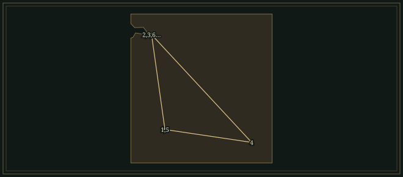

ModestMussorgsky
He could make a singer sound like a frightened child, a drunken monk or a tsar who could no longer bear his own thoughts.
- Trained
- Piano with Anton Gerke; composition with Mily Balakirev, outside the conservatory
- Earned his living
- Guards officer until 1858; later a clerk in the Forestry Department and Government Control
- Friends
- Borodin, Cui, Balakirev, Rimsky-Korsakov; Vladimir Stasov and Viktor Hartmann
- Output
- Boris Godunov, unfinished operas, three song cycles, Pictures at an Exhibition
Life
When Borodin met Mussorgsky at a Saint Petersburg military hospital in 1856, the seventeen-year-old officer was immaculate, with a close-fitting uniform, polished manners and well-kept hands. He played extracts from Il trovatore and La traviata at the piano while admirers gathered round. Twenty-five years later, in another hospital, Repin painted the portrait that became his most familiar likeness. It shows a man in a dressing gown, his hair in disorder and his eyes still alert.
1839–63Leaving the regiment
Mussorgsky was born at Karevo, on his family’s estate. His mother taught him the piano, and his nurse’s stories prompted the improvisations he remembered from childhood. At ten he was sent to school in Saint Petersburg, where he studied piano with Anton Gerke. He entered the School of Guards Cadets in 1852 and received a commission in the Preobrazhensky Regiment in 1856. His father paid for the publication of his first piano piece, a polka.
Alexander Dargomyzhsky welcomed him into his musical evenings, where he met Balakirev and the critic Vladimir Stasov. Balakirev taught at the piano, playing symphonies as duets and explaining how they were put together. Mussorgsky resigned his commission in 1858. The emancipation of the serfs in 1861 reduced the family’s income from its estate, and composition brought little money. In 1863 he took a civil-service post and shared a flat with a group of young men who read and argued about the new Russian literature.
The composers around Balakirev were later called the Five. Each had another profession. Borodin practised chemistry, Cui taught military engineering and Rimsky-Korsakov served in the navy. Mussorgsky had a desk in a government office. They played and argued over one another’s scores and largely taught themselves. Balakirev’s verdict could also stop a piece. He refused to conduct Mussorgsky’s original St John’s Night on the Bare Mountain, completed in 1867, and it remained unheard in its composer’s lifetime.
1864–68Kalistrat and The Marriage
In Kalistrat, a poor man recalls his mother rocking him and promising a happy, comfortable life. Her promise is heard in the lullaby, and the song sets it against his present circumstances. Mussorgsky made other songs out of a beggar’s plea, a seminarian’s complaints and a child’s talk. A singer might stay on one pitch for several syllables, then leap at the most important word. The piano could interrupt, or stop and leave the voice unaccompanied.
In the summer of 1868 he completed the first act of The Marriage. Writing to Lyudmila Shestakova on 30 July/11 August, he declared that his music must be “an artistic reproduction of human speech in all its finest turns”. Gogol’s characters talk over and contradict each other, and the vocal lines follow the rhythms of their speech. He left the opera unfinished. An earlier opera, Salammbô, after Flaubert, had also been abandoned, and he later reused some of its music in Boris Godunov.
1868–74Boris and the crowd
He began Boris in 1868, drawing on Pushkin’s play and Karamzin’s history. The first version, finished in 1869, has seven scenes and no leading female role. The Imperial Theatres rejected it. Mussorgsky added Marina and the Polish scenes, rewrote much else, and brought a riotous crowd into the Kromy forest scene. During part of the revision he shared rooms with Rimsky-Korsakov. The opera reached the Mariinsky Theatre in 1874, with cuts.
In the first crowd scene the people are bullied into begging Boris to take the throne. At the coronation they sing his praise while bells clash above them. Inside the monastery the old monk Pimen writes his chronicle; in the inn Varlaam, who has been drinking, sings of the siege of Kazan. Boris is given grandeur when the scene calls for it. In his scenes alone with his guilt, his thoughts keep returning to the murdered child before he can finish them.
In the seven songs of The Nursery (1868–72), Mussorgsky wrote his own words for children telling tales, being sent into a corner, remembering a beetle or riding a hobby-horse. He dedicated the first song to Dargomyzhsky. The singer Alexandra Purgold was an important advocate. Her sister Nadezhda wrote in her diary in April 1870 that Mussorgsky wrote his children’s songs for Sasha because she could perform them properly.
1874Pictures at an Exhibition
Viktor Hartmann died in 1873, aged thirty-nine. Stasov helped organise an exhibition of his drawings, designs and watercolours early in 1874. In June Mussorgsky wrote Pictures at an Exhibition at speed. “Sounds and ideas hung in the air,” he told Stasov that month; he could barely get them down. The recurring Promenade represents Mussorgsky himself walking through the rooms. Its first phrase takes five beats, the next six.
A troubadour sings outside an old castle, chicks dance in their shells and market women quarrel. The piano then plays the bare chords of the catacombs. The Promenade returns among the dead, with a tremolo above it. The final picture is Hartmann’s unbuilt gate for Kyiv, in enormous E♭ major chords, with a quieter chant and bells spread across the keyboard. In Ravel’s orchestration of 1922 the Promenade is given to a trumpet and the troubadour to an alto saxophone.
That same year Mussorgsky composed Sunless, six songs to poems by Arseny Golenishchev-Kutuzov, in which the singer is alone in a room with his memories. In the later Songs and Dances of Death, also to poems by Golenishchev-Kutuzov, Death appears as a nurse singing a lullaby, a lover singing a serenade, a partner in a dance and a commander surveying the battlefield.
1872–81Last operas and death
Two operas occupied his last decade: Khovanshchina, about the political and religious struggles around Peter the Great’s rise, and Gogol’s village comedy The Fair at Sorochyntsi. The latter absorbed music from the witches’ sabbath. Khovanshchina brought the streltsy soldiers and the Old Believers into a history assembled from different years. “If only I did not have to go to work as well,” he wrote to Shestakova on 2/14 August 1876, “that’s what stands in the way.”
Alcohol dependence made his employment and accommodation increasingly precarious. In 1879 he toured southern Russia with the contralto Darya Leonova, accompanying her and playing his own music. He lost his government post in 1880. After seizures in February 1881 he was admitted to the Nikolaevsky Military Hospital. Repin came to paint him there in March and worked over four days. Mussorgsky died in the hospital on 28 March, a week after his forty-second birthday.
Rimsky-Korsakov prepared the scores that brought much of his friend’s music to the public, smoothing chords and filling out the orchestra as he went. Later musicians went back to the manuscripts. Debussy admired the songs; Shostakovich orchestrated both historical operas and Songs and Dances of Death.
Places

All 11 places, with sources
- Karevo, Pskov Governorate · 1839-03-21–1852 · born
Born into a wealthy landowning family, reputedly descended from Rurik, 400 km south of Saint Petersburg.
Modest Mussorgsky — Wikipedia (English) · Карево (Псковская область) — Wikipedia (Russian)
- Cadet School of the Guards, Saint Petersburg · 1852–1856 · studied
Entered at thirteen; he played dances and improvisations for fellow cadets and graduated in 1856.
- Saint Petersburg · 1856-10–1858 · worked
Commissioned in the Preobrazhensky Regiment; met Borodin at a military hospital, then took lessons from Balakirev.
- Moscow · 1859 · travelled
A visit after which he professed love of “everything Russian”; that year he had also helped stage Glinka’s opera.
- Karevo · 1861–1863 · lived
After the emancipation of the serfs he spent much time on the family estate, but could not stave off its ruin.
- Saint Petersburg · 1868 · worked (inferred)
Set the first eleven scenes of Gogol’s <i>Marriage</i> under Dargomyzhsky’s influence; met the artist Hartmann at about the same time. Zhenitba (Marriage).
Modest Mussorgsky — Wikipedia (English) · Pictures at an Exhibition — Wikipedia (English)
- Mariinsky Theatre, Saint Petersburg · 1873-02-05 · premiere
Friends staged three scenes of <i>Boris Godunov</i> as a benefit; their success led to a full production. Boris Godunov (excerpts).
- Saint Petersburg · 1874 · worked (inferred)
Wrote <i>Pictures at an Exhibition</i> in memory of Hartmann, after an exhibition at the Imperial Academy of Arts. Pictures at an Exhibition.
Pictures at an Exhibition — Wikipedia (English) · Modest Mussorgsky — Wikipedia (English)
- Mariinsky Theatre, Saint Petersburg · 1874-01-27 · premiere
Premiere of the revised <i>Boris Godunov</i> as a benefit; the Cell Scene was cut for length. Old Style date. Boris Godunov.
- Tikhvin Cemetery, Alexander Nevsky Monastery · 1881-03 · buried
Interred at the Tikhvin Cemetery in Saint Petersburg.
Modest Mussorgsky — Wikipedia (English) · Tikhvin Cemetery — Wikipedia (English)
- Saint Petersburg · 1881-03-28 · died
Repin painted his portrait days before; Mussorgsky died a week after his forty-second birthday.
Influences
Teachers, encounters and borrowed music, each with its account and sources in the Web of Influence.
Influences received
The Sound
𝅘𝅥Speech
Mussorgsky set each sentence to the length of the spoken phrase. In The Nursery, a child rushes through a complaint, holds a repeated note and stops abruptly when the nurse answers. Pimen’s narration in Boris Godunov moves at the steadier pace of an old chronicler. Mussorgsky built the difference from the syllables and from where each character has to take a breath.
♮Chords
The piano chords of Catacombs stand apart from one another, some loud, some quiet, with little connecting accompaniment between them. Each chord decays before the next is played. In The Great Gate of Kyiv, a chant-like passage interrupts the broad E♭ major theme.
𝄾Uneven steps
The opening Promenade of Pictures at an Exhibition alternates bars of 5/4 and 6/4. The extra beat is written into the phrase, so the pianist does not have to stretch a regular bar to produce it. When the melody returns later in the cycle, its harmonies and accompaniment have changed.
𝄋Scenes
Boris Godunov moves from the crowd outside the monastery to a coronation, a monk’s cell and an inn. Each place has its own music: bells and acclamation for the coronation, measured narration for Pimen, a rough song for Varlaam. Mussorgsky sometimes ends one scene abruptly and begins the next with a new voice.
𝄢Solo piano writing
The Promenade begins as a single unaccompanied line, then returns in full chords. Elsewhere in Pictures, octaves, tremolo and sudden leaps between the ends of the keyboard require the pianist to imitate several kinds of instrument. Ravel supplied actual instruments in his orchestration. In the piano original each note has the blunt attack and rapid decay of strings struck by hammers.
𝄞Death’s disguises
In Songs and Dances of Death, Death speaks through the familiar forms of a lullaby, a serenade and a dance. A mother hears a promise of rest for her child; a freezing peasant is offered a trepak. The singer has to present both the promise and its consequence.
Works
A selection from the composer’s works.
- 1863–66Salammbô (unfinished)Opera after FlaubertAn abandoned opera set in ancient Carthage. Mussorgsky reused some of its music in Boris Godunov.
- 1864KalistratVoice and piano; poem by Nikolai NekrasovIn this short song a poor man remembers the lullaby his mother sang to him, which promised him a happy life.
- 1867St John’s Night on the Bare MountainOrchestraThe original orchestral witches’ sabbath, not performed in his lifetime. The usual concert version is Rimsky-Korsakov’s arrangement of 1886.
- 1868The Marriage (unfinished)Opera after Gogol; one act in vocal scoreGogol’s prose set with its conversational changes of direction kept. Mussorgsky completed one act, then applied the experiment in setting speech to Boris.
- 1868–72The NurseryVoice and piano; seven songs to Mussorgsky’s own textsA child talks to the nurse, protests a punishment and rides a hobby-horse. The child’s part is sung by an adult singer.
- 1868–72Boris GodunovOpera after Pushkin; soloists, chorus and orchestraThe 1869 version was rejected; a substantial revision reached the stage in 1874. In it the tsar commands a crowd and is helpless before a memory.
- 1872–80Khovanshchina (unfinished)Historical opera; soloists, chorus and orchestraSoldiers, rival princes and Old Believers face the coming power of Peter the Great. Mussorgsky left much of the music in vocal score, with the ending unfinished.
- 1874SunlessVoice and piano; six poems by Arseny Golenishchev-KutuzovSix songs on isolation and remembered encounters. The piano part is often sparse, with only occasional chords under the voice.
- 1874Pictures at an ExhibitionPianoWritten after the memorial exhibition for Viktor Hartmann and dedicated to Stasov. The walking Promenade theme later appears within the pictures themselves, returning among the catacombs and the bells.Recordings in the Hall
- 1874–80The Fair at Sorochyntsi (unfinished)Comic opera after GogolA Ukrainian fair, a pair of young lovers and a frightening dream. Mussorgsky reused his witches’ sabbath in the dream scene. He left the opera incomplete.
- 1875–77Songs and Dances of DeathVoice and piano; four poems by Golenishchev-KutuzovDeath takes charge of a lullaby, a serenade, a trepak and a battlefield. In each song the singer takes on a new character, and there is another victim.
In the Score
Short examples, engraved and playable.
Pictures at an Exhibition · PromenadeFive beats, then six
Harmonic workshop · schematicParallel chord movement
Sister Arts

Repin painted Mussorgsky in the Nikolaevsky Military Hospital over four days in March 1881. Mussorgsky is shown in a dressing gown, with uncombed hair. Stasov was a friend and advocate of both painter and composer.

Hartmann’s gate was never built. Its belfry, which had a cupola in the shape of a Slavic helmet, was the subject of the last of Mussorgsky’s Pictures, a broad movement in E♭ major with passages of quiet chant and the sound of bells.

In Trilby, with music by Julius Gerber and choreography by Marius Petipa, children danced inside eggshell costumes designed by Hartmann, with canary heads above the shells. Mussorgsky’s Ballet of the Unhatched Chicks sets the steps in high staccato notes, grace notes and trills.
Recommended recordings
- Pictures at an ExhibitionSviatoslav Richter, piano; live in SofiaPhilips · 1958The piano original, in a live recording. Richter plays with very forceful attacks. The sound is thin mono, and the audience can be heard coughing.
- Boris GodunovAnatoly Kotcherga; Berlin Philharmonic, Claudio AbbadoSony Classical · 1993Mussorgsky’s orchestration, combining the later version with the 1869 Saint Basil’s scene. Kotcherga sings Boris as an inward, vulnerable figure, and plays the death scene in the same manner.
- Pictures at an Exhibition, orchestrated by RavelChicago Symphony Orchestra, Fritz ReinerRCA · 1957A companion to Richter. The Chicago trumpet plays the repeated notes in Schmuyle exactly, and Reiner keeps The Great Gate moving under the full brass.
Lineage
Ravel gave the trumpet and saxophone parts in his orchestration of Pictures. Shostakovich worked directly on the operas and death songs; Debussy admired Mussorgsky’s sung speech. Janáček shared his attention to the patterns of a person speaking, with short repeated notes, sudden leaps and phrases broken off abruptly.
Further reading
- David Brown, Musorgsky: His Life and Works (Oxford: Oxford University Press, 2002).biography
Life-and-works study covering completed compositions and unfinished projects.
- Robert W. Oldani, ‘Musorgsky [Mussorgsky; Moussorgsky], Modest Petrovich’, Grove Music Online (Oxford University Press, 2001).reference
Biographical reference, work-list and bibliography; subscription required.
- Jay Leyda and Sergei Bertensson, eds and trans., The Musorgsky Reader: A Life of Modeste Petrovich Musorgsky in Letters and Documents (New York: W. W. Norton, 1947).letters
Documents and correspondence, with work-list, discography and source references.
- Modest Musorgsky, Pictures at an Exhibition (St Petersburg: V. Bessel & Co., 1886).score
Free historical editions permit comparison of the piano original with later arrangements.
Cite this page
Contrapunctus. “Modest Mussorgsky.” Accessed 19 October 2026. https://mottopanikeiku.github.io/contrapunctus/composers/mussorgsky.html.
@misc{contrapunctus-composers-mussorgsky,
author = {{Contrapunctus}},
title = {Modest Mussorgsky},
howpublished = {\url{https://mottopanikeiku.github.io/contrapunctus/composers/mussorgsky.html}},
note = {Accessed 2026-10-19}
}